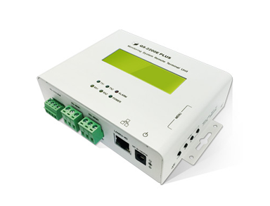
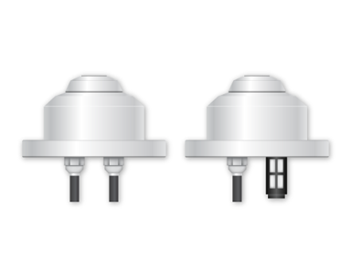
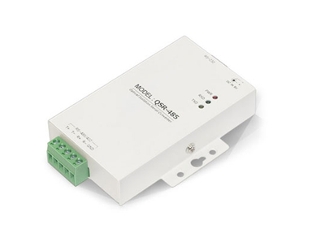
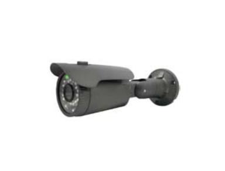
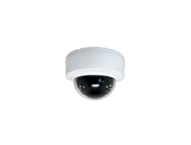
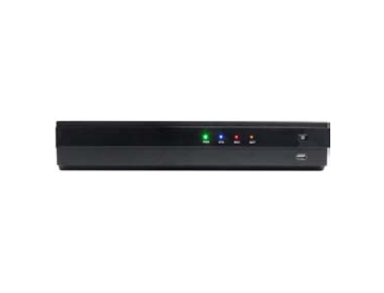

|  |
제품명 |
QS-2200E RTU PLUS |
| 제품사양 |
- 용도 : 웹모니터링 전송용 RTU
- 크기 : 132mm(가로) × 102mm(세로) × 36(두께) mm
- 입출력 : 4 Line CLCD, RJ-45 1개
- 통신 : RS-485#1(인버터용), RS-485#2(환경장비용), RS232(현황판 등 예비용) 1Port
|
|  |
제품명 |
기상관측장비 |
| 제품사양 |
- 용도 : 태양광 발전소 기상 관측용 수평면, 경사면 일사량 및 온도 측정
- 일사량 측정범위 : 0~1500W/m2
- 일사량 정밀도 : ±5%
- 크기 : 가로×세로×높이: 110× 110 × 41mm
- 전원 : DC 9V IN 포함
- 통신 : RS-485 방식 / 1.0Km(9,600bps)
|
|  |
제품명 |
QS-485 Converter |
| 제품사양 |
- 용도 : RS232 to RS422/485 회선 컨버터(인터페이스: EIA RS-232, RS-485, RS-422표준)
- 크기 : 132mm(가로) × 102mm(세로) × 36(두께) mm
- 전원 : DC9V
- 통신 : RS-485/422 : 1.0KM ,(115,200bps ) . RS-232 : 5M이하
- 플러그 앤 플레이 (핫 플러그, 데이터 형식 자동감지&자동조정)데이터 방향으로 자동전환, 흐름제어가 필요 없음
- LED를 통한 송신, 수신, 전원 상태 확인 가능
|
|  |
제품명 |
CCTV_실외용 |
| 제품사양 |
2MP FIXED BULLET CAMERA (FIB-2030RFGP)
- 1/2.8” 2Megapixel STARVIS CMOS 이미지 센서
- 소니 초고감도 센서 (STARVIS) 사용
- 최대 30fps@1920X1080 고해상도 지원
- Dual 스트리밍 지원(H.264)
- 3.6mm 메가픽셀 고정 Lens
- IR 가시거리 30M
- PoE 지원
2MP Motorized BULLET CAMERA (FIB-2030RAGP)
- 1/2.8” 2Megapixel STARVIS CMOS 이미지 센서
- 소니 초고감도 센서 (STARVIS) 사용
- 최대 30fps@1920X1080 고해상도 지원
- Dual 스트리밍 지원(H.264)
- 2.8-12mm Motorized Lens
- IR 가시거리 40M
- PoE 지원
|
|  |
제품명 |
CCTV_실내용 |
| 제품사양 |
2MP FIXED DOME CAMERA (FID-2020RFWP)
- 1/2.8” 2Megapixel STARVIS CMOS 이미지 센서
- 소니 Progressive Scan CMOS 사용
- 최대 30fps@1920X1080 고해상도 지원
- Dual 스트리밍 지원(H.264)
- 3.6mm 메가픽셀 고정렌즈
- IR 가시거리 10M
- PoE 지원
|
|  |
제품명 |
4K NVR |
| 제품사양 |
- 4K 카메라 지원
- 내장 PoE(최대 8채널)를 이용한 플러그 앤 플레이 기능
- One-Click 방식의 카메라 자동 등록
- 드래그 & 드롭 방식의 스마트 등록
- 자동 IP를 이용한 IP 설정 불필요
- ONVIF 완벽 지원을 통한 카메라 호환성 극대화
- 지능형 이중(메인 & 서브) 스트림 녹화 및 디스플레이
- 복잡한 네트워크 설정이 필요 없는 ezP2P™ 클라우드 서비스
- PUSH 비디오 콜(아이폰/아이패드 및 안드로이드 폰)
- 원격 소프트웨어(CMS) 및 스마트폰을 이용한 원격 모니터링
|